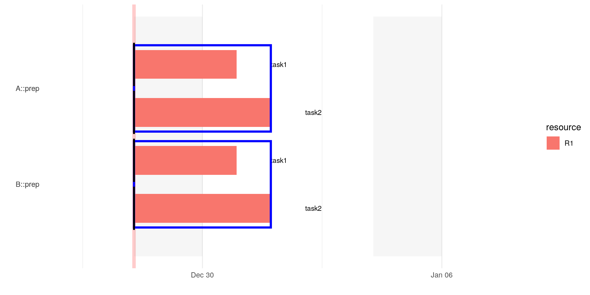
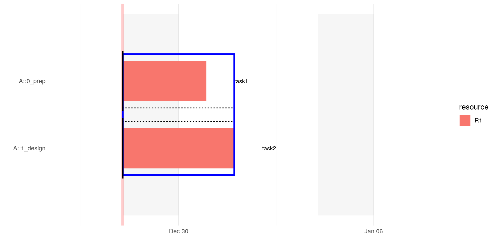

project_and_sections.RmdThe columns project and section can be used to group task together also in the gantt-chart. Furthermore, the project column is necessary if one wants to specify dependencies between tasks of different projects. For illustration purpose, we will create very small project plans, that focus on the corresponding aspect under considerations.
Usually it is not necessary to create the project column explicitly. Importing the a project plan with projectPlan::import_xlsx will use the name of the sheet as the project name. However, if a project column exists the name of the sheet is ignored.
Lets look at two very simple projects containing two tasks each:
Creating a gantt-chart one sees that every plan gets its own blue frame:
pp %>%
projectPlan::wrangle_raw_plan() %>%
projectPlan::calculate_time_lines() %>%
projectPlan::gantt_by_sections()
#> WARN -- 2019-12-28 09:25:53 -- projectPlan/h.exclude_weekends(earliest_start_time, end): start 2019-12-28 is on a weekend. Shift end 2019-12-29 by 2 day(s).
#> WARN -- 2019-12-28 09:25:53 -- projectPlan/h.exclude_weekends(earliest_start_time, end): start 2019-12-28 is on a weekend. Shift end 2019-12-30 by 2 day(s).
#> WARN -- 2019-12-28 09:25:53 -- projectPlan/h.exclude_weekends(earliest_start_time, end): start 2019-12-28 is on a weekend. Shift end 2019-12-29 by 2 day(s).
#> WARN -- 2019-12-28 09:25:53 -- projectPlan/h.exclude_weekends(earliest_start_time, end): start 2019-12-28 is on a weekend. Shift end 2019-12-30 by 2 day(s).
See the article about id’s and dependencies on how to define dependencies between projects.
Within every blue frame, i.e. a project, of a gantt-chart further dotted frames/lines separate the different sections within that project, where the section are sorted alphabetically.
pA %>%
projectPlan::wrangle_raw_plan() %>%
projectPlan::calculate_time_lines() %>%
projectPlan::gantt_by_sections()
#> WARN -- 2019-12-28 09:25:54 -- projectPlan/h.rd_select_cols(df): Create missing column(s): -end, status-
#> WARN -- 2019-12-28 09:25:54 -- projectPlan/h.exclude_weekends(earliest_start_time, end): start 2019-12-28 is on a weekend. Shift end 2019-12-29 by 2 day(s).
#> WARN -- 2019-12-28 09:25:54 -- projectPlan/h.exclude_weekends(earliest_start_time, end): start 2019-12-28 is on a weekend. Shift end 2019-12-30 by 2 day(s).